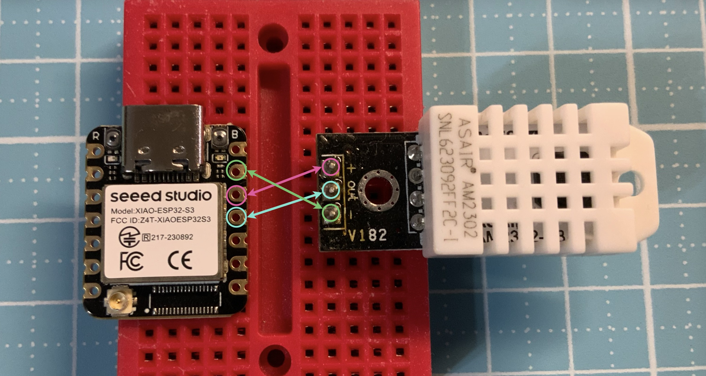
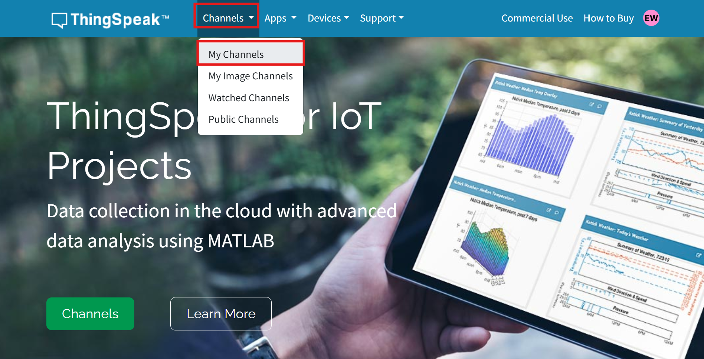
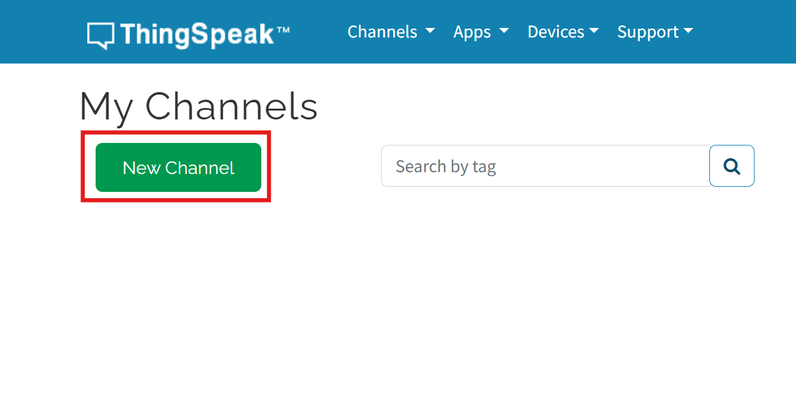
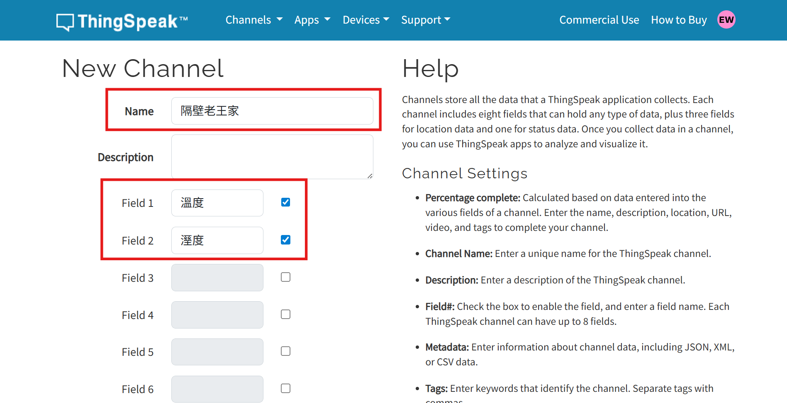
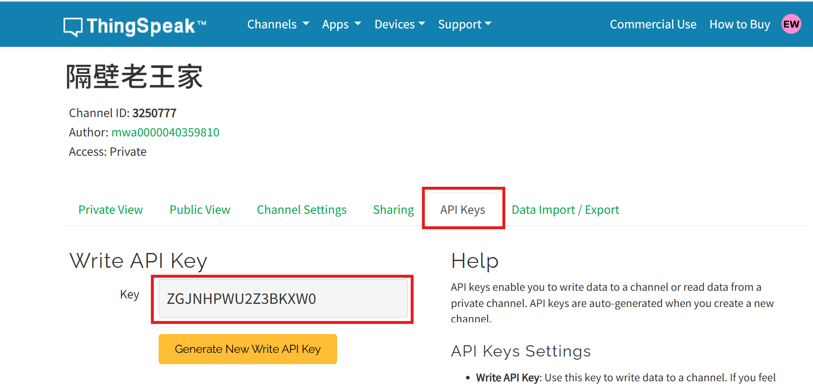
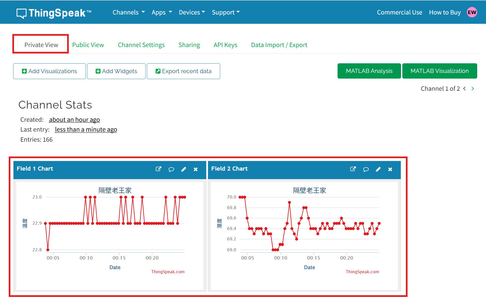
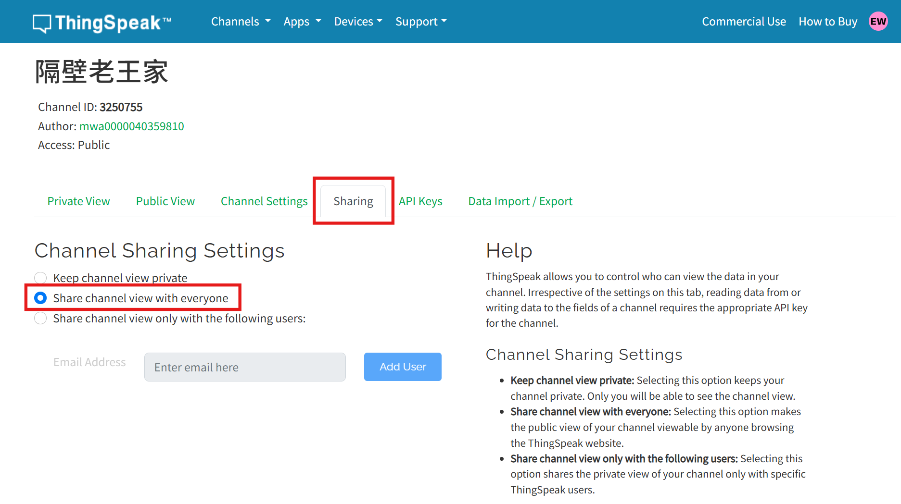
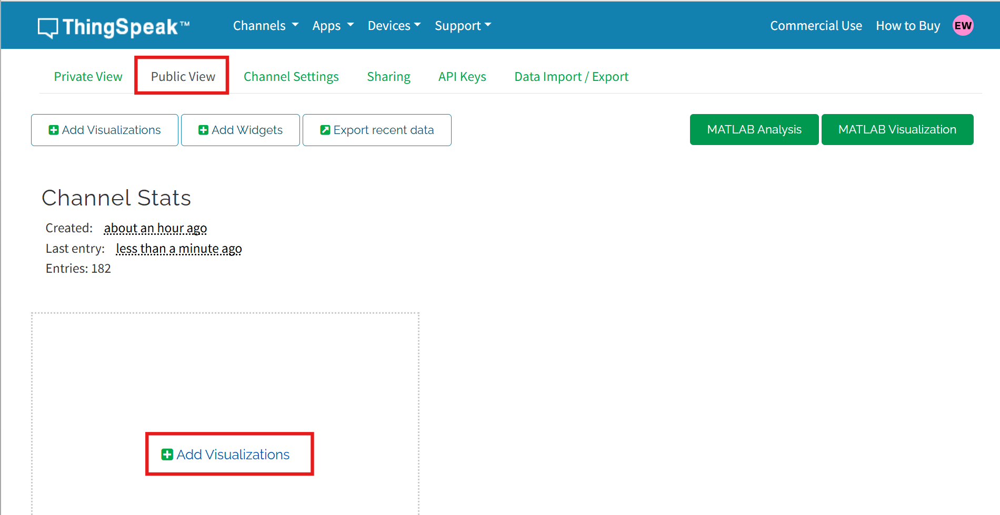
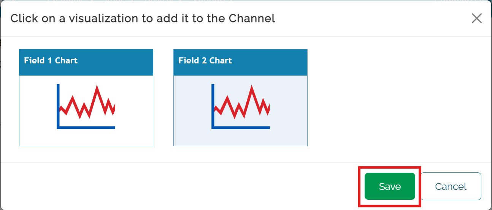
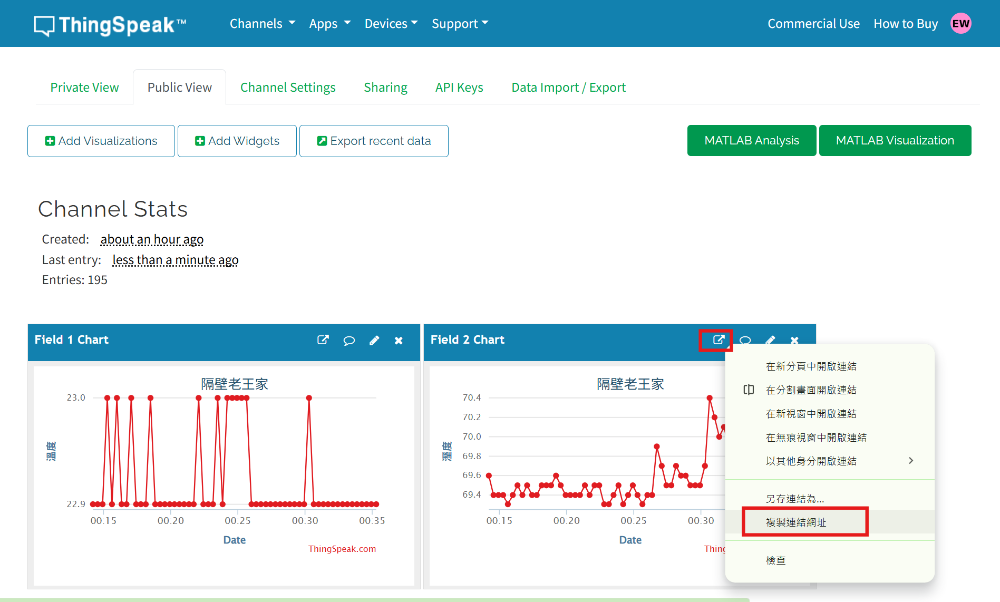

腳位圖

圖片來源：
Seeed Studio 官方文件
接線圖

- 把Esp32插在麵包板左側正中間。
- Esp32的GND接在模組的-。
- Esp32的3V3接在模組的+。
- Esp32的GPIO 9接在模組的OUT。





DHT22_And_ThingSpeak.py
import machine
import time
import dht
import network
import urequests
# ========= 使用者設定 =========
WIFI_SSID = "改成您家的"
WIFI_PASSWORD = "改成您家的"
THINGSPEAK_API_KEY = "ZGJNHPWU2Z3BKXW0"
THINGSPEAK_URL = "http://api.thingspeak.com/update"
# =============================
# DHT22 資料腳位（GPIO9）
dht22 = dht.DHT22(machine.Pin(9))
def connect_wifi():
wlan = network.WLAN(network.STA_IF)
# 🔥 關掉再開（重置內部狀態）
wlan.active(False)
time.sleep(1)
wlan.active(True)
time.sleep(1)
if not wlan.isconnected():
print("🔌 連線 WiFi 中...")
wlan.connect(WIFI_SSID, WIFI_PASSWORD)
for _ in range(20):
if wlan.isconnected():
break
time.sleep(1)
if wlan.isconnected():
print("✅ WiFi 已連線:", wlan.ifconfig())
else:
print("❌ WiFi 連線失敗")
def read_dht22():
dht22.measure()
temp = dht22.temperature()
hum = dht22.humidity()
return temp, hum
def send_to_thingspeak(temp, hum):
payload = {
"api_key": THINGSPEAK_API_KEY,
"field1": temp,
"field2": hum
}
r = urequests.post(THINGSPEAK_URL, json=payload)
r.close()
print("📤 已上傳 ThingSpeak")
# ---------- 主程式 ----------
connect_wifi()
while True:
try:
temp, hum = read_dht22()
print("🌡 溫度: {:.1f}°C".format(temp))
print("💧 濕度: {:.1f}%".format(hum))
send_to_thingspeak(temp, hum)
except OSError as e:
print("❌ 感測失敗:", e)
# ThingSpeak 免費版最少 15 秒一次
time.sleep(20)




